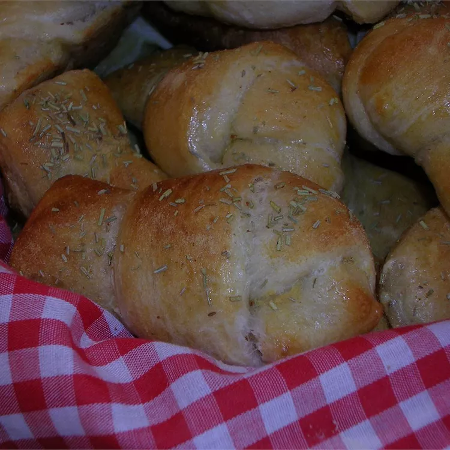

Garlic Knots

Description:
So simple and quick to make, these delicious knots of herb-seasoned bread will do well to complete just about any meal. Or eat these tasty knots as a snack between meals, with your favorite spread slathered on! Using fresh rosemary makes these knots especially fragrant.
Ingredients:
- 1 (11 ounce) container refrigerated breadstick dough
- 1 egg, lightly beaten
- 1 teaspoon garlic powder
- 1 tablespoon chopped fresh rosemary
Steps:
- Preheat oven to 375 degrees F (190 degrees C).
- Tie the dough into 12 knots and place them onto a cookie sheet. Brush the knots with the egg, and sprinkle the rosemary and garlic onto the knots. Bake the knots according to the package directions.